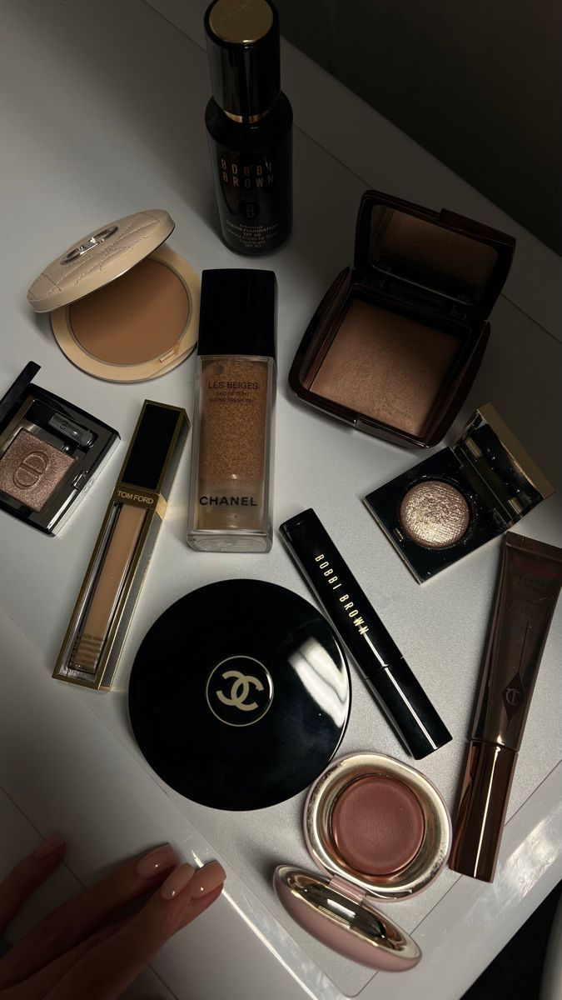

User Experience Design
User Experience Design
for Dashboard App
Project Overview
Merancang pengalaman kecantikan menyeluruh untuk brand makeup inovatif yang berfokus pada personalisasi dan kemudahan penggunaan. Tujuan utama adalah menciptakan rangkaian produk serta pengalaman pengguna yang intuitif, elegan, dan relevan bagi para pecinta makeup yang menginginkan hasil maksimal dengan cara yang praktis dan menyenangkan.
Research & Discovery
Proses riset mendalam dilakukan untuk memahami kebutuhan dan preferensi pengguna, meliputi:
- Wawancara dengan 50+ pengguna dari berbagai latar belakang (profesional, remaja, dan beauty enthusiast)
- Analisis 15 merek makeup kompetitor untuk memahami tren warna, formula, dan kemasan di pasar
- Sesi observasi rutinitas makeup harian untuk mengidentifikasi tantangan dan kebiasaan pengguna
- Uji coba produk awal dengan kelompok fokus untuk mengevaluasi tekstur, daya tahan, dan kenyamanan
Makeup Design Strategy
Pendekatan desain berfokus pada pengalaman yang estetis dan fungsional, dengan strategi utama:
- Formula ringan dan tahan lama yang cocok untuk berbagai jenis kulit
- Kemasan minimalis dan ergonomis untuk kemudahan penggunaan dan tampilan elegan
- Palet warna serbaguna yang mendukung berbagai gaya dan tone kulit
- Komitmen terhadap produk ramah lingkungan dan cruelty-free
Key Outcomes
Hasil utama dari proyek makeup ini meliputi:
- Peningkatan kepuasan pengguna sebesar 75%, berdasarkan survei setelah peluncuran
- Penurunan waktu aplikasi makeup sebesar 40% berkat kemasan dan formula praktis
- Peningkatan loyalitas pelanggan sebesar 60% dalam tiga bulan pertama
- Penghargaan “Best Innovative Beauty Product” dari Beauty Trend Awardst
Project Gallery